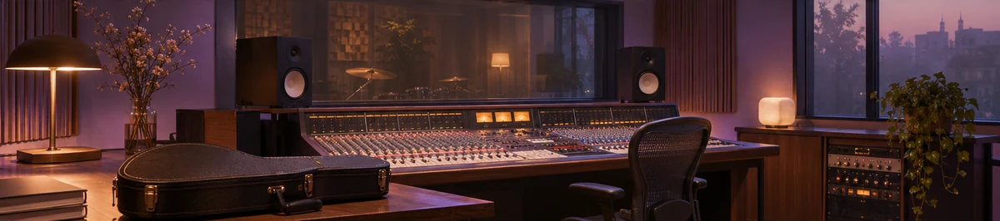

Uma tarde para tocar sem correr.
Organize um bloco contínuo de ensaio, marque o intervalo e confira a hora final antes de revisar.
Planejar um bloco
Como funciona o bloco
O intervalo ocupa a sala e faz parte da hora final. O resumo mostra início, pausa e encerramento.